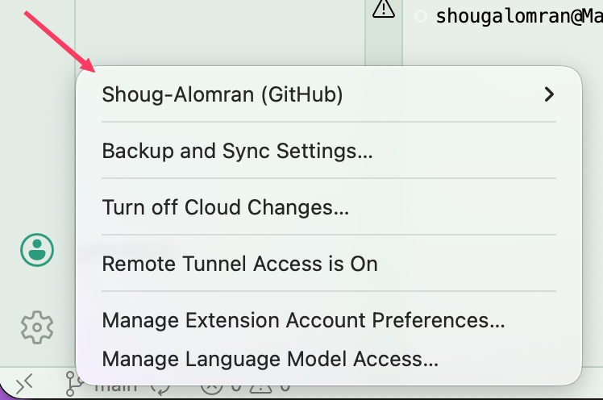
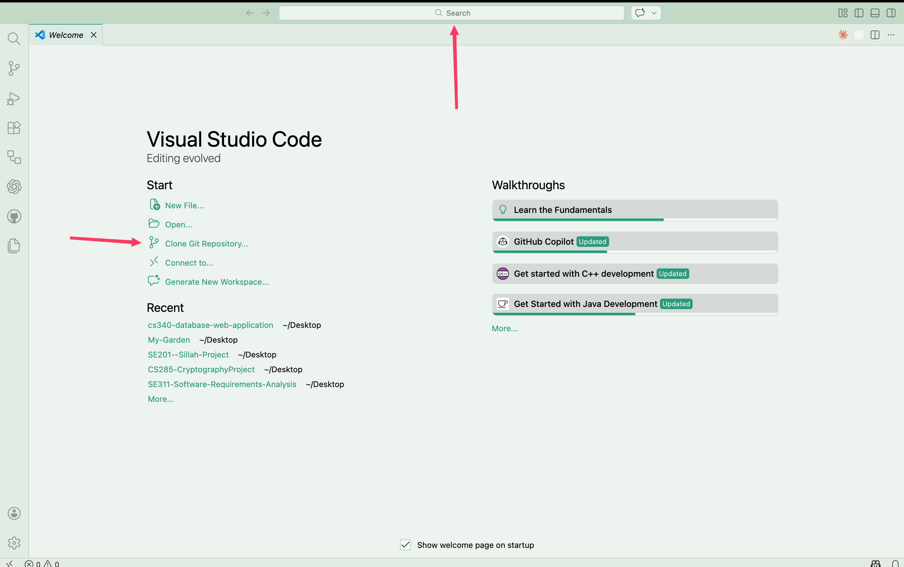
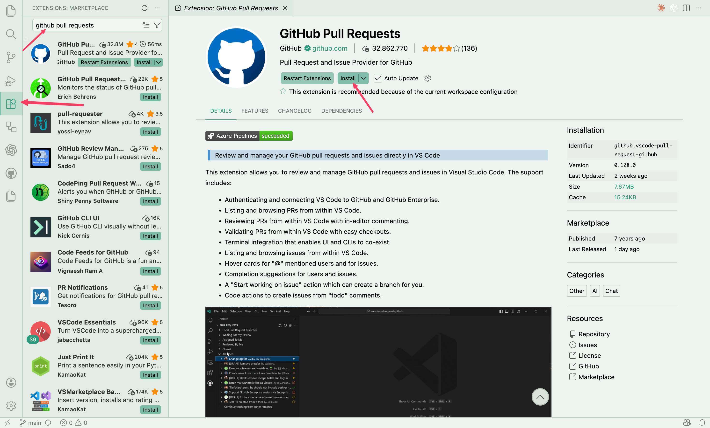
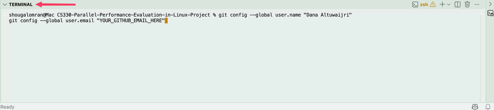
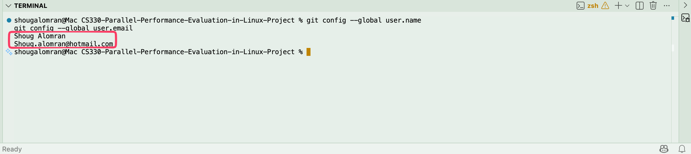
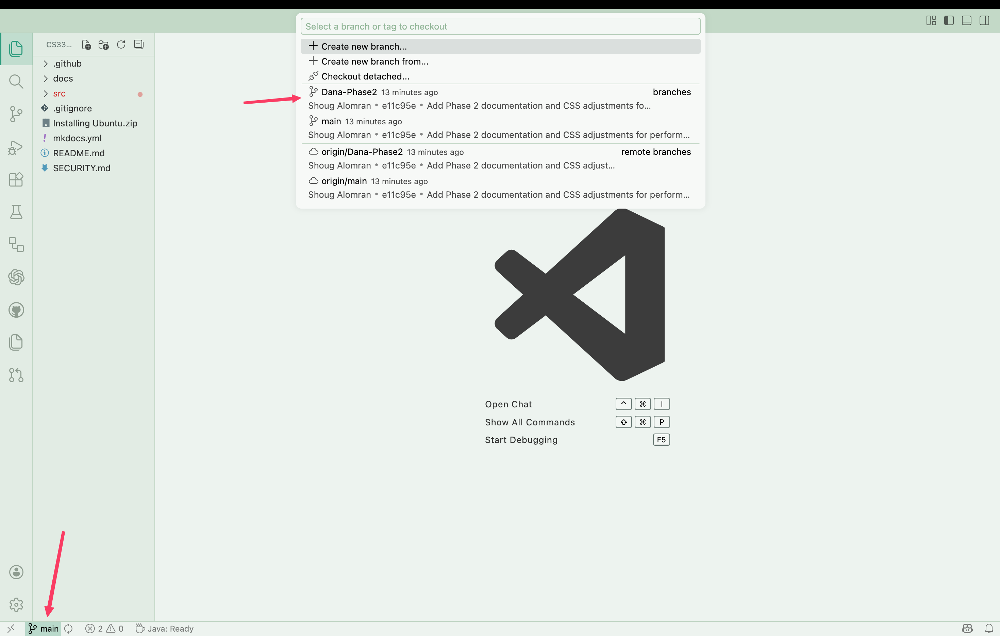
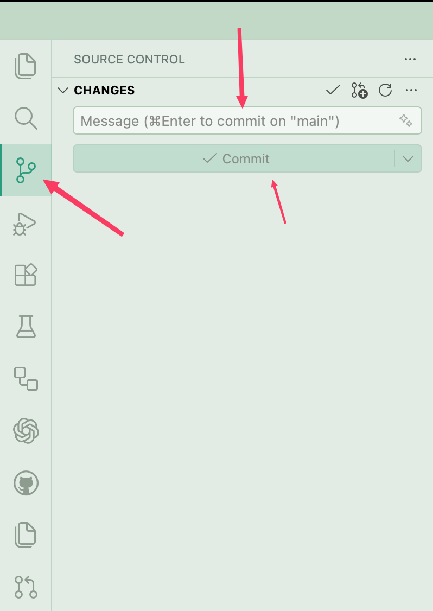

- Go to github.com and sign in.
- Accept the collaborator invitation (check your email or GitHub notifications).
- Make sure you can see the repository in your account.
- روحي على github.com وسجّلي دخولك.
- اقبلي دعوة المتعاون (راجعي إيميلك أو إشعارات GitHub).
- تأكدي إنك تقدرين تشوفين الريبو في حسابك.
- Open VS Code.
- Press
Ctrl + Shift + Pto open the command palette (the search bar at the top). - Type:
Git: Cloneand press Enter. - Paste this URL:
https://github.com/Shoug-Alomran/CS330-Parallel-Performance-Evaluation-in-Linux-Project.git
- Choose a folder to save it in (e.g. your Desktop).
- Click Open when VS Code asks you.
- افتحي VS Code.
- اضغطي
Ctrl + Shift + Pلتفتحي لوحة الأوامر. - اكتبي:
Git: Cloneواضغطي Enter. - الصقي هذا الرابط:
https://github.com/Shoug-Alomran/CS330-Parallel-Performance-Evaluation-in-Linux-Project.git
- اختاري فولدر تحفظينه فيه.
- اضغطي Open لما VS Code يسألك.
Screenshots: VS Code Welcome + Clone Git Repository button لقطات ▾


- In VS Code, click the Extensions icon (left sidebar).
- Search for:
GitHub Pull Requests. - Install the extension named GitHub Pull Requests (publisher: GitHub).
- If VS Code asks, click Sign in to GitHub and complete the browser login.
- في VS Code اضغطي أيقونة Extensions (في الشريط الجانبي).
- ابحثي عن:
GitHub Pull Requests. - ثبتي الإضافة باسم GitHub Pull Requests (الناشر: GitHub).
- إذا طلب منك VS Code، اضغطي Sign in to GitHub وكمّلي تسجيل الدخول من المتصفح.
Screenshot: Install GitHub Pull Requests لقطة شاشة: تثبيت الإضافة ▾

Open the terminal inside VS Code with Ctrl + ` (the backtick above Tab), then run:
git config --global user.name "Dana Altuwaijri" git config --global user.email "YOUR_GITHUB_EMAIL_HERE"
Now verify it worked:
git config --global user.name git config --global user.email
If it prints your name and email correctly, you're all set. You won't need the terminal again after this.
افتحي الترمنال بـ Ctrl + ` (فوق زر Tab)، ثم شغّلي:
git config --global user.name "Dana Altuwaijri" git config --global user.email "إيميلك_على_GitHub_هنا"
تحققي:
git config --global user.name git config --global user.email
لو طبع اسمك وإيميلك صح، خلاص ما تحتاجين الترمنال مرة ثانية.
Screenshots: Terminal git config commands + verification لقطات ▾


- Look at the bottom-left corner of VS Code. You will see a branch name.
- Click it to open the branch picker.
- Select
Dana-Phase2.
origin/Dana-Phase2.
Confirm the bottom-left now shows Dana-Phase2 ✓
- شوفي الزاوية اليسرى السفلية في VS Code. راح تشوفين اسم فرع.
- اضغطيه لتفتحي قائمة الفروع.
- اختاري
Dana-Phase2.
origin/Dana-Phase2.تأكدي إن الزاوية تقول Dana-Phase2 ✓
Screenshot: Branch picker لقطة شاشة: قائمة الفروع ▾

Edit your files as you normally would. Whenever you save a file, it will automatically appear in the Source Control panel on the left (the branch icon).
عدّلي ملفاتك بشكل طبيعي. لما تحفظين أي ملف، راح يظهر تلقائياً في لوحة Source Control على الشمال (أيقونة الفرع).
- Click the Source Control icon in the left sidebar (branch icon).
- Write a short commit message. Example: "Update phase 2 analysis".
- Click Commit.
- Click Push or Sync Changes.
- اضغطي أيقونة Source Control في الشريط الجانبي.
- اكتبي رسالة قصيرة. مثال: "تحديث تحليل المرحلة 2".
- اضغطي Commit.
- اضغطي Push أو Sync Changes.
Screenshot: Source Control commit panel لقطة شاشة: لوحة Commit ▾

- Check the bottom-left. It must say
Dana-Phase2. If not, switch back to it. - Open Source Control and click Pull to get the latest changes.
- Then start editing.
- راجعي الزاوية اليسرى السفلية. لازم تقول
Dana-Phase2. لو لا، ارجعي له. - افتحي Source Control واضغطي Pull لتنزّلي آخر التغييرات.
- وبعدين ابدأي التعديل.